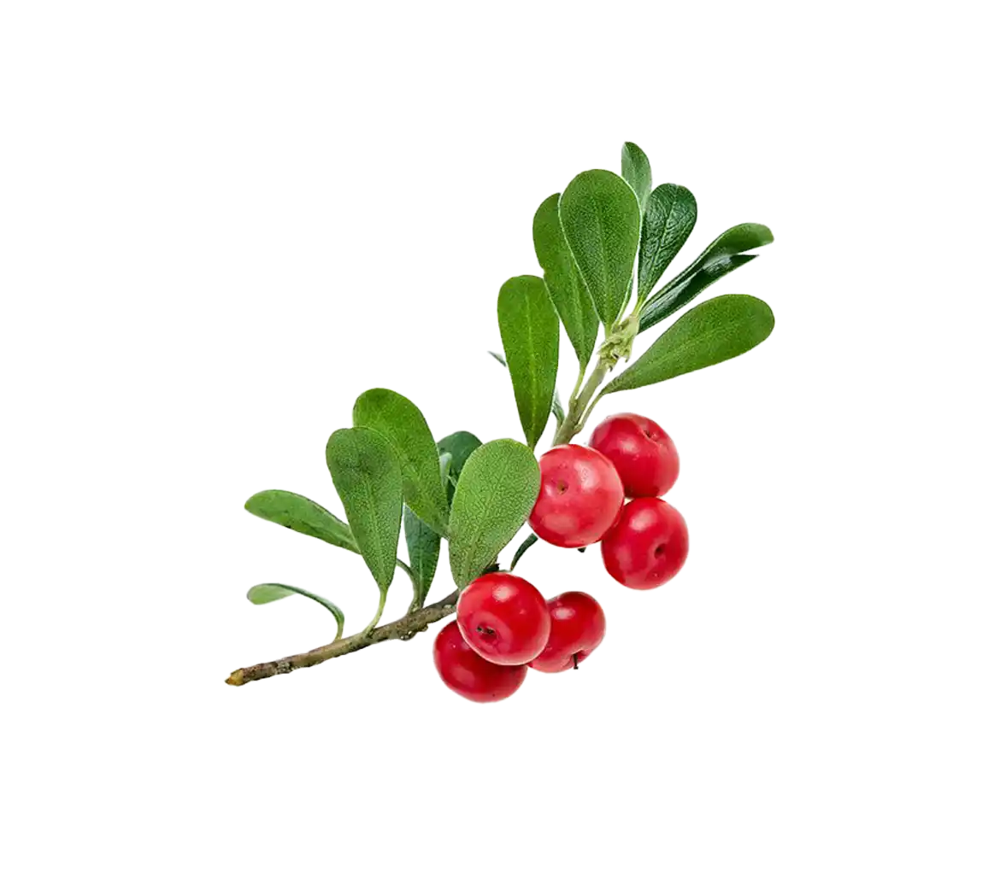
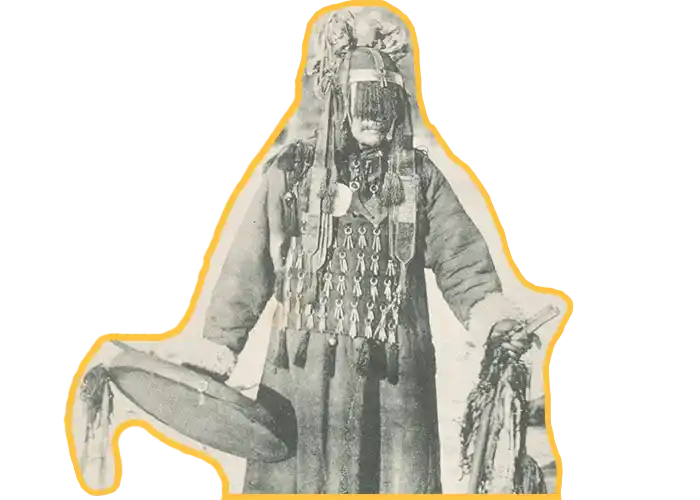
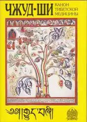
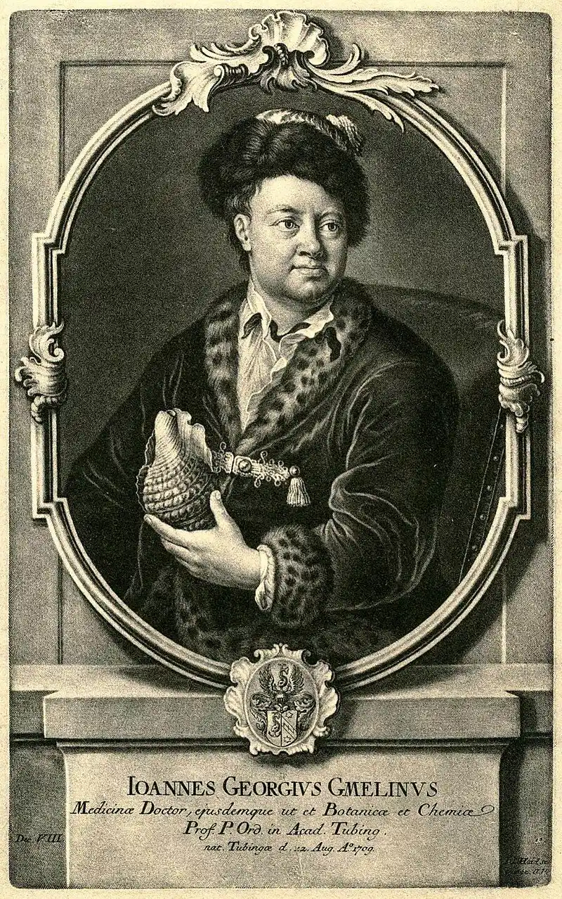
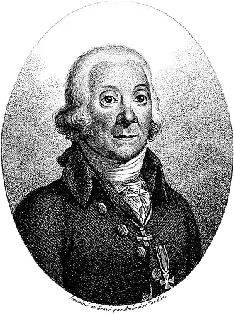
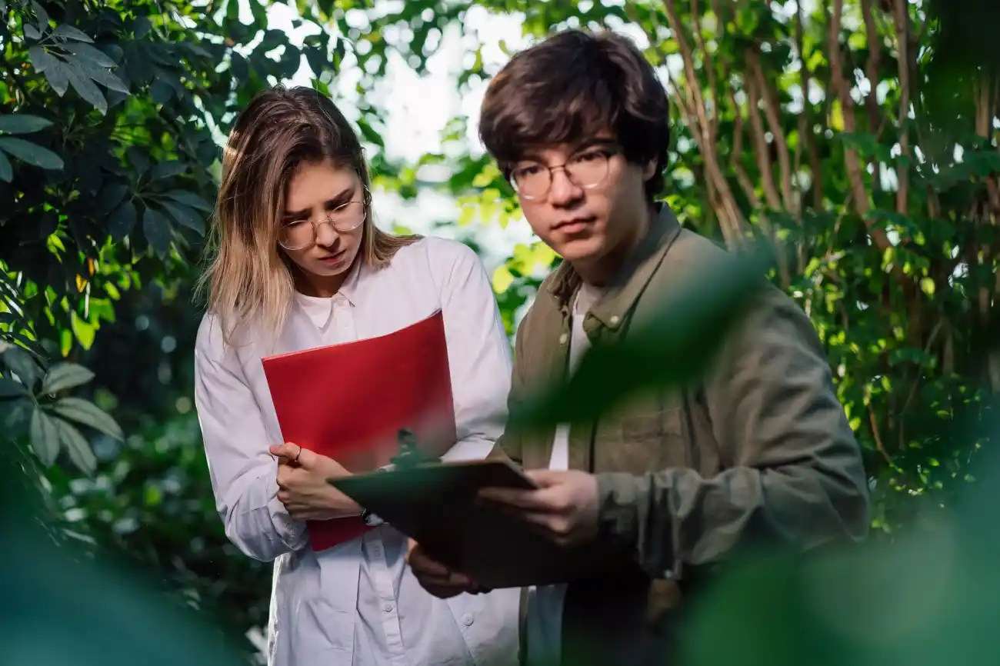
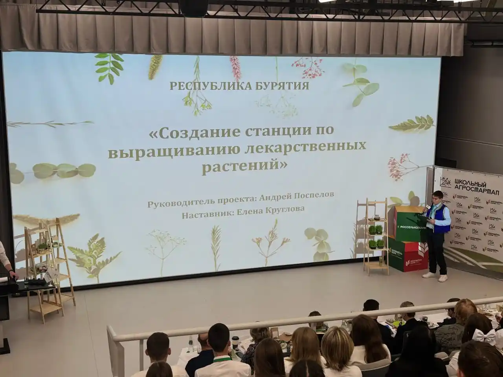
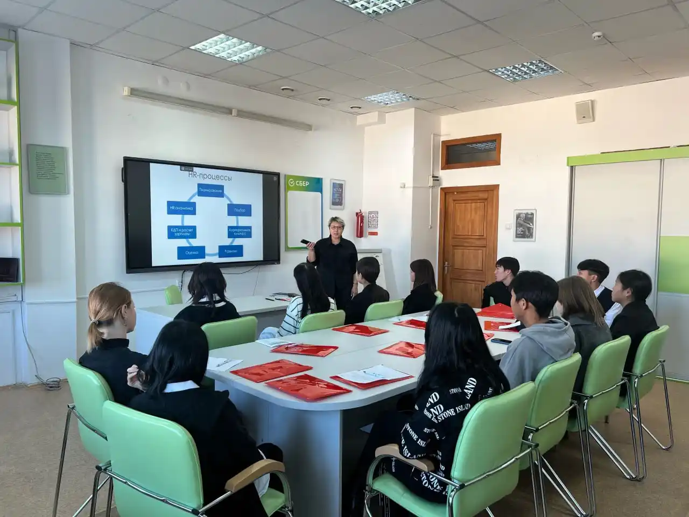
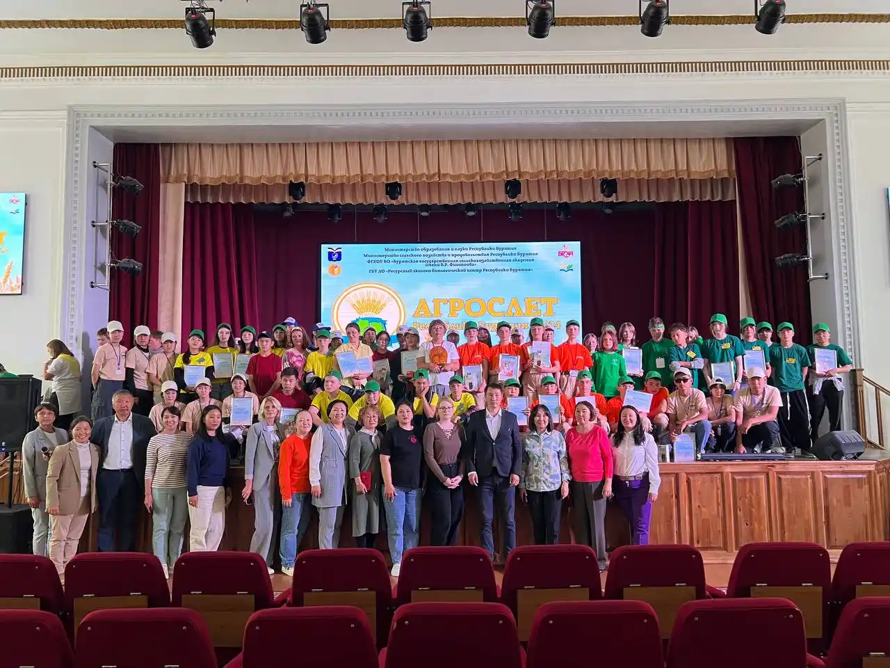

Древо знаний
История изучения лекарственных растений Бурятии


до XVI
Эпоха традиций и устного наследия. Знания о целебных травах передаются устно в кланах, родах и семьях. Активно используется бурятская народная медицина, шаманские практики.



XVII
Начало активного проникновения в Бурятию тибетской медицины, особенно с распространением буддизма тибетского толка (ламаизма). Этот процесс усилился после официального признания буддизма как одной из традиционных религий Российской империи в 1741 году. В это время формируются дацаны (буддийские монастыри), при которых появляются медицинские школы, изучающие трактаты тибетской медицины, такие как "Чжуд-ши".
XVIII
первые описания и систематизация
- Появляются первые этнографические сведения о растениях Сибири от русских первопроходцев.
- 1770-е — экспедиции Иоганна Георга Гмелина, учёный-энциклопедист и великолепный художник, автор многотомного труда «Флора Сибири», экспедиции Петра Симона Палласа, академика, описавшего флору Забайкалья.

Иоганн Георг Гмелин (1709 - 1755)

Петр Симон Паллас (1741 - 1811)
XIX
научный интерес и ботаническая картография
- Различные экспедиции;
- Работа с гербариями, создание первых травников с научным описанием.
Во второй половине 19 века Потанин Г., будучи в Бурятии, записал названия ряда лекарственных растений, применяемых бурятами.
Турчанинов Н.В., изучая флору Забайкалья, сам лично собрал 1370 различных растений, причем большее внимание он уделял лекарственным растениям, произрастающим в Бурят-Монголии.
Кириллов Н., работая в Бурят-Монголии в качестве врача, изучил большое количество лекарственных растений и собрал материал по народной медицине.
Палибин Н.В., путешествуя по Бурят-Монголии и Монголии, в 1899 г. собрал, частично скупил и обработал большой гербарий лекарственных растений; он впервые сообщил о заготовке и использовании солодки в Кяхтинском и Джидинском аймаках и Северной Монголии. Стуков Г. Посвятил свои работы изучению лекарственного растительного сырья и народным способам лечения людей и животных.
Байкал в цифрах
Уникальная природа Байкальского региона в значимых показателях.

видов лекарственных растений в регионе

занесены в Красную книгу

активно применяются в современной медицине
Используются в:
Тайны природы
Агроклассы — путь в аграрные профессии
Бурятская государственная сельскохозяйственная академия имени В.Р. Филиппова ведет активную работу со школьниками республики. В агроклассах ученики знакомятся с основами сельского хозяйства, экологии и биотехнологий.
Участники агроклассов принимают участие в научных экспедициях, где изучают лекарственные растения Бурятии, их свойства и способы сохранения биоразнообразия.
Программа агроклассов включает практические занятия, мастер-классы от ведущих ученых академии и знакомство с современными аграрными профессиями.




Проверь свои знания!
Источники и полезные ссылки


Приемная комиссия БГСХА
Сайт абитуриента Бурятской ГСХА предоставляет полную информацию о поступлении, экзаменах, конкурсах и учебной жизни в академии.
Подробнее
Травник: 108 целебных растений Байкала
Справочник по лекарственным травам Байкальского региона
Подробнее
Цифровой гербарий БГСХА
Это онлайн-база с описаниями, изображениями, 3D-моделями и данными о применении лекарственных растений, интегрированная с библиотекой Бурятской ГСХА.
Подробнее